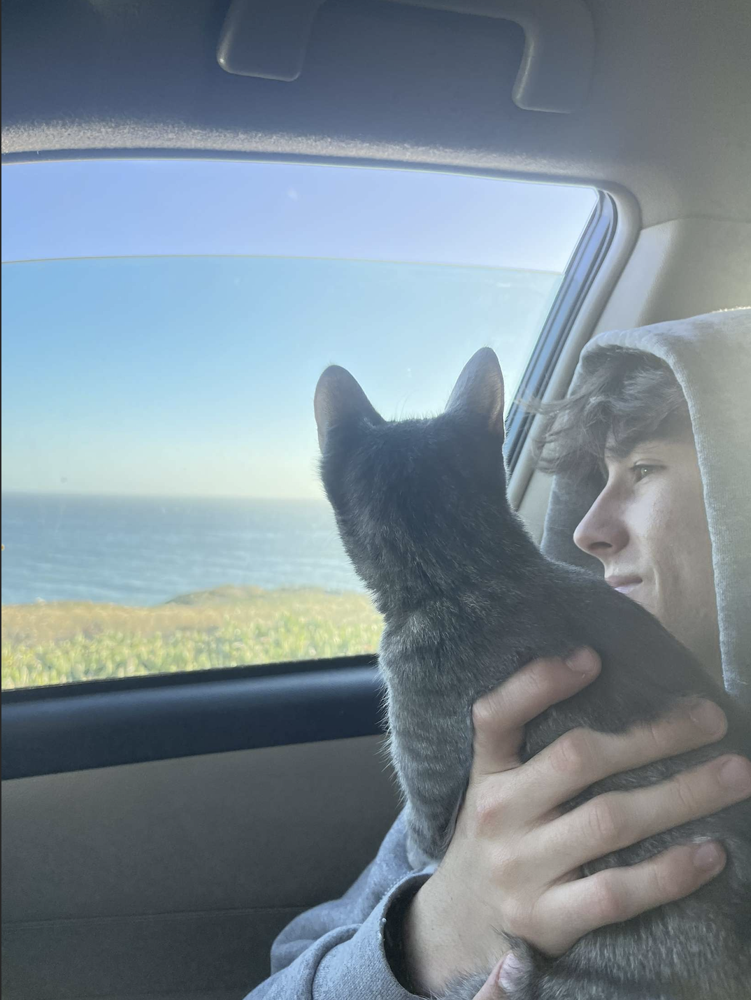

Sean McLychok
Economics, Junior
I am adventurous, curious and creative person who loves to explore new ideas and activities! I love to surround myself with nature, where I mostly enjoy surfing. On the technical side, I am fascinated by various topics in tech, real estate and the environment.
- Bunz
- Gorditos Amigos
- Seniores

Space Type Generator
Reading Response
- Something important I learned from this article about developing an eye for web design would be observing how texts and color are used to signify importance. This is an extremely important tool to learn because this technique holds power with the viewer
- My favorite part of this article was its use of real life examples, using videos and images taken from Spotify, Twitter, and Airbnb. Using examples from these widely used apps shows how they utilize different tools to grab the audience effectively.
- "As you watch each component build upon the next, be curious about everything you see and think through the choices that had to be made for this product."
- 7